A collection of the best foods i've ever had
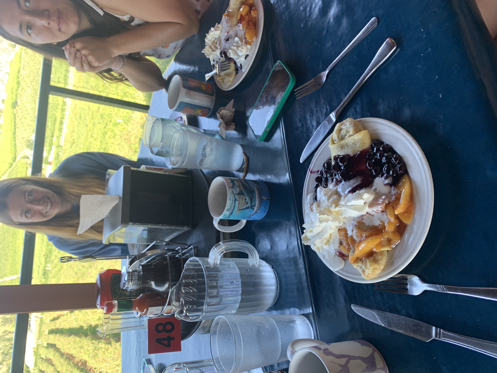
Breakfast with a view
Blue Berry Hills, Washington State
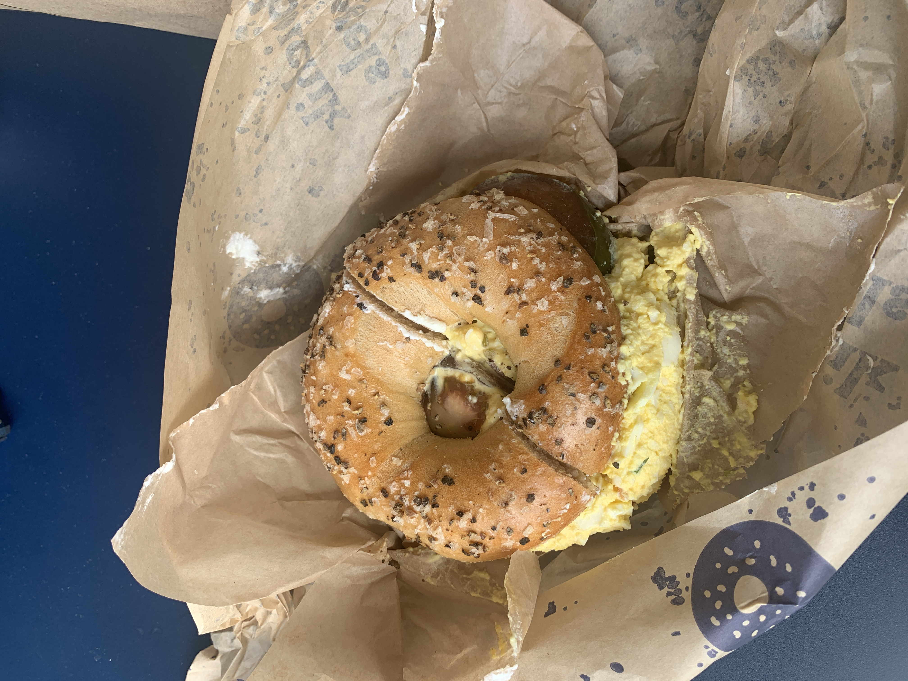
Best Bagel in California
Boichik Bagels, Palo Alto, CA
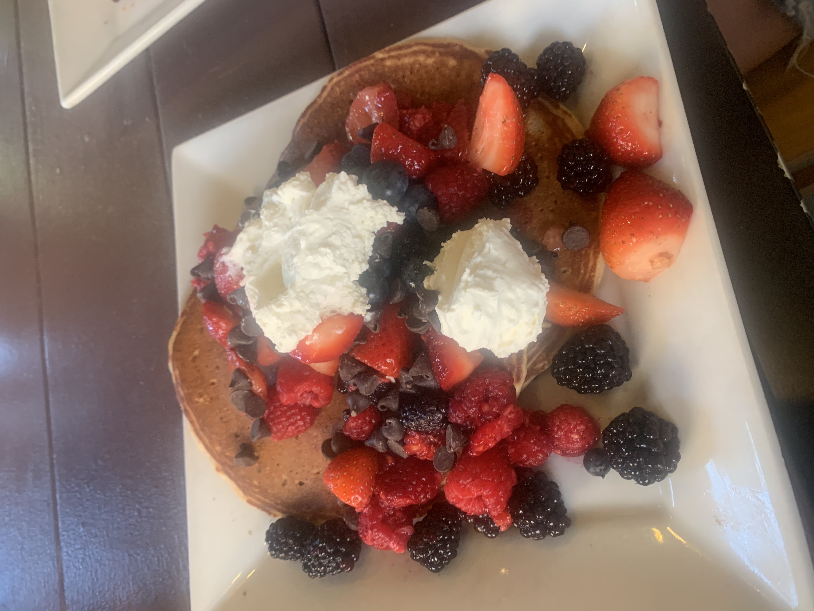
Best Pancakes of All Time
Portage Bay Cafe, Seattle
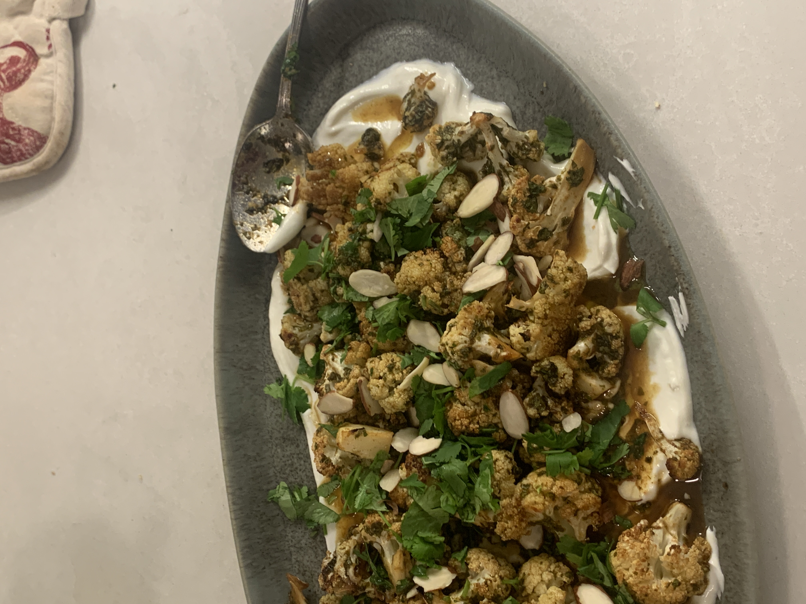
My favorite dish at home
Mom's cauliflower
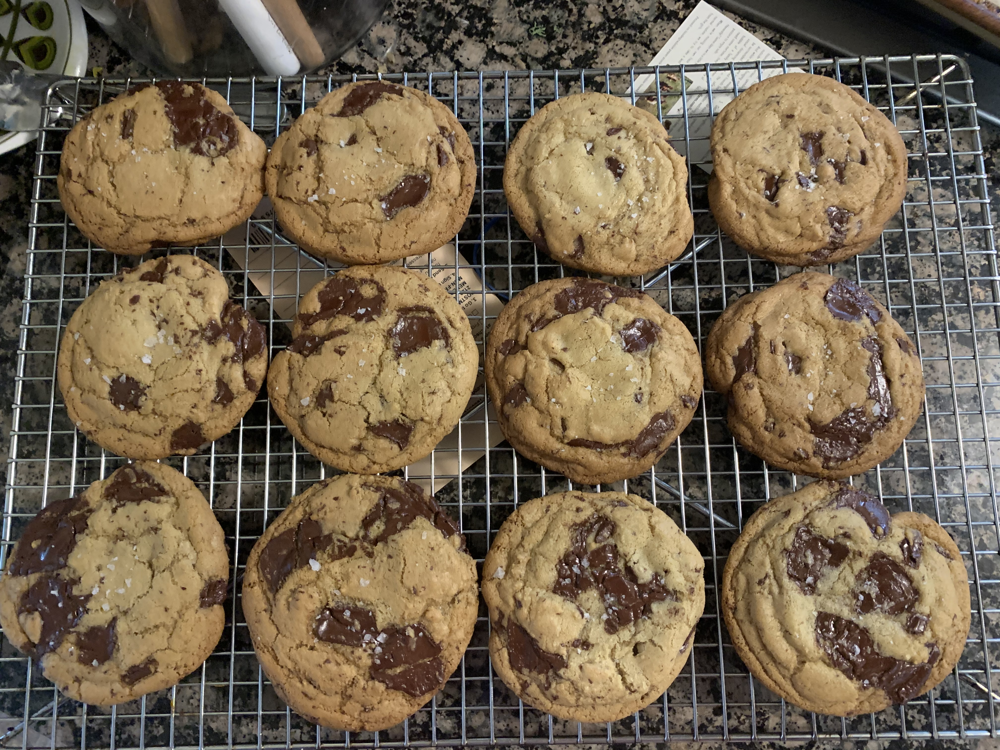
My favorite i've ever baked
Chocolate chip cookies using the
pan bang method
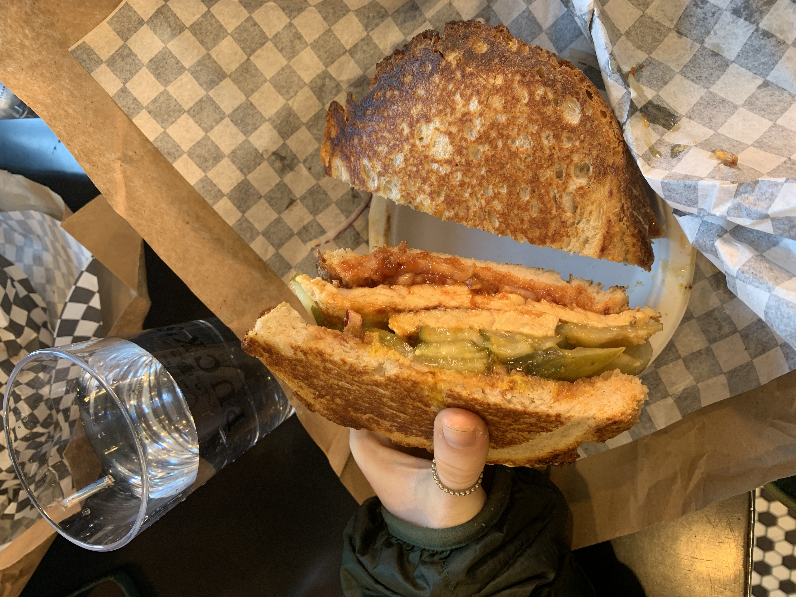
Best sandwich of all time
Zinnkein's, Ann Arbor, Michigan
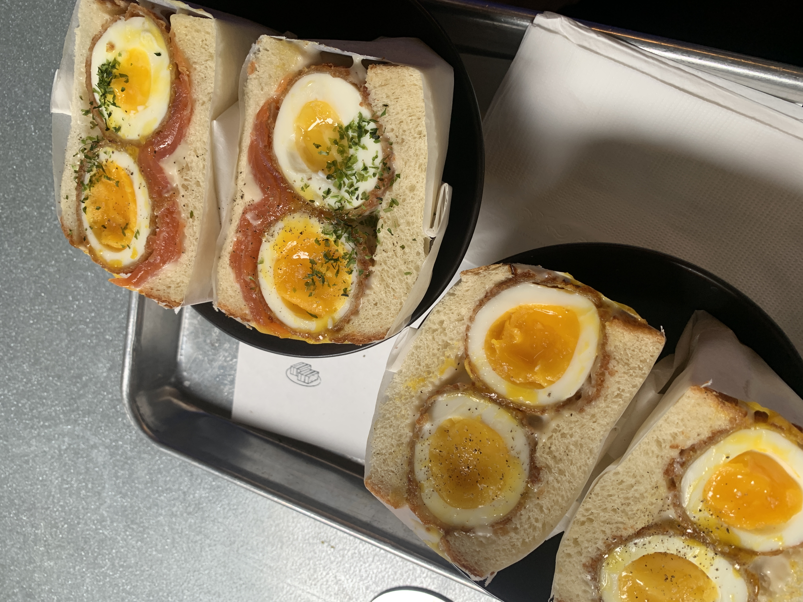
The best form an egg can come in - jammy
Osmo Cafe, Montreal
note: this cafe turns into a night club!
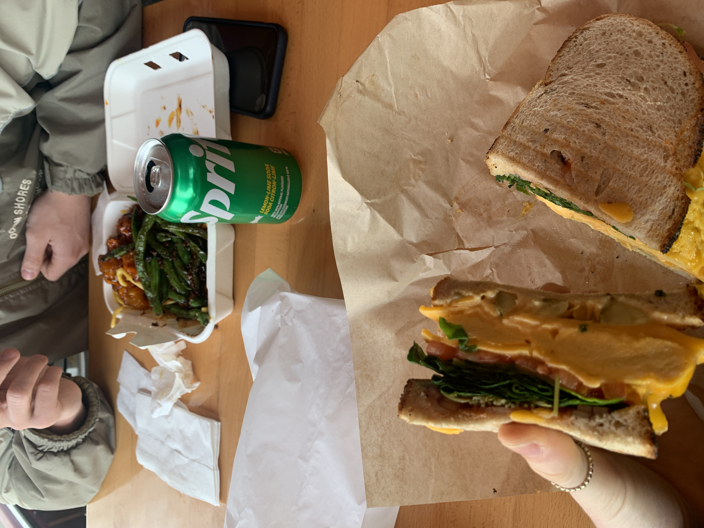
Yet another fantastic sandwich
Granville Island Public Market, Vancouver Canada
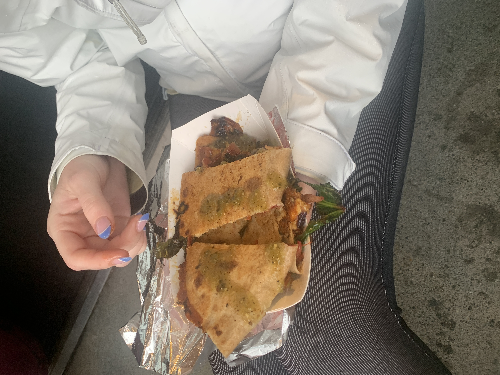
Quesadilla!
Found this quesadilla at the Seattle UDistrict farmer's market. Delectable.
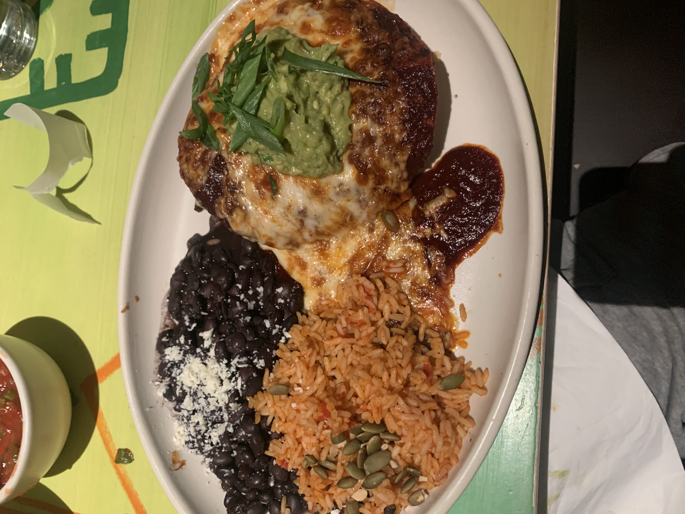
You wouldn't believe it but this is an enchilada, Seattle WA
Enough said.
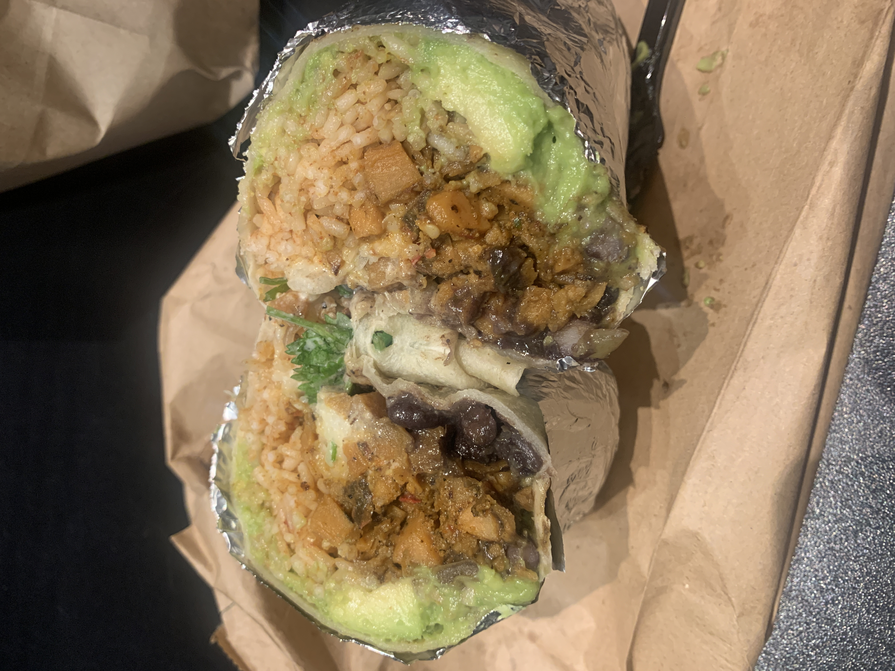
Best Mexican food in Providence
Talullah's Taqueria, Providence RI
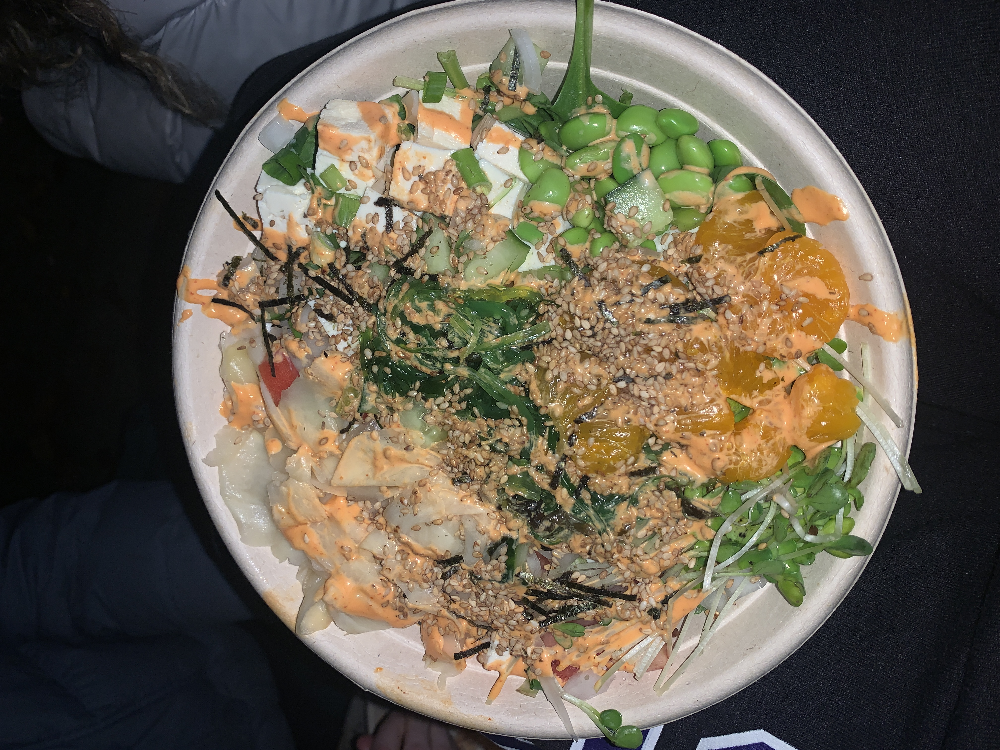
Poke!
Hiroshi's Poke, Seattle WA
If you're ever in Seattle, take this poke bowl to Gasworks Park and eat it.